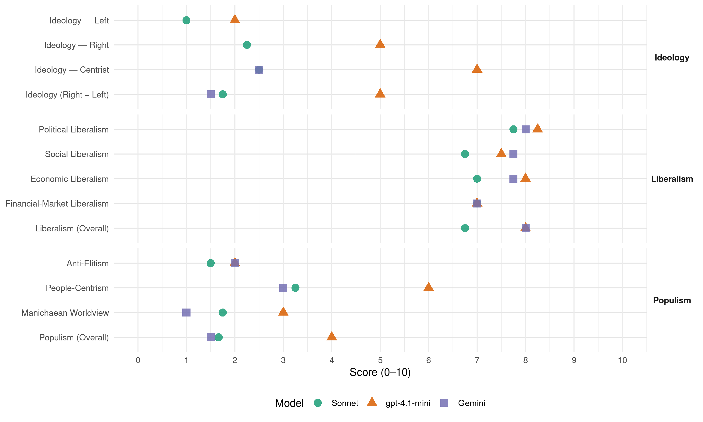

CDU/CSU (Germany, 2013)
manifesto_id 41521_201309
Get full text: This site shows derived annotations and short verbatim quotes only. The full manifesto text is © Manifesto Project / WZB — obtain it via manifesto-project.wzb.eu using the manifesto_id above.
Headline scores
| Dimension | Sonnet | gpt-4.1-mini | Gemini |
|---|---|---|---|
| Populism (Overall) | 1.7 | 4.0 | 1.5 |
| Anti-Elitism | 1.5 | 2.0 | 2.0 |
| People-Centrism | 3.2 | 6.0 | 3.0 |
| Manichaean Worldview | 1.8 | 3.0 | 1.0 |
| Ideology (Right − Left) | 1.8 | 5.0 | 1.5 |
| Liberalism (Overall) | 6.8 | 8.0 | 8.0 |
| Political Liberalism | 7.8 | 8.2 | 8.0 |
| Social Liberalism | 6.8 | 7.5 | 7.8 |
| Economic Liberalism | 7.0 | 8.0 | 7.8 |
| Financial-Market Liberalism | 7.0 | 7.0 | 7.0 |
Evidence per dimension
Economic Liberalism
Gemini · score 8.0 · verified · chunk 1
“Wir wollen die Soziale Marktwirtschaft stärken”
Schulden anderer Länder einstehen müssten. Das lehnen wir ab. Wir wollen die Soziale Marktwirtschaft stärken und ihre Prinzipien in Europa
Gemini · score 8.0 · verified · chunk 2
“marktwirtschaftliche Lösungen mit fairem Wettbewerb, Technologieoffenheit”
Entwicklung der Energiepreise. Deshalb setzen wir auf marktwirtschaftliche Lösungen mit fairem Wettbewerb, Technologieoffenheit und neuen technologischen Entwicklungen. Die Energiewende
Gemini · score 8.0 · verified · chunk 3
“bekennen uns zum Wettbewerb”
Wir bekennen uns zum Wettbewerb der Krankenkassen. Eine staatliche Einheitsversicherung für alle lehnen wir ab.
Gemini · score 7.0 · verified · chunk 4
“sozial und ökologisch ausgerichteten Marktwirtschaft”
Minderung von Armut im Rahmen einer sozial und ökologisch ausgerichteten Marktwirtschaft, die Bewahrung
gpt-4.1-mini · score 9.0 · verified · chunk 1
“Wir wollen die Soziale Marktwirtschaft stärken und ihre Prinzipien in Europa”
Wir wollen die Soziale Marktwirtschaft stärken und ihre Prinzipien in Europa und darüber hinaus weiter verankern. Sie hat unserem Land in den vergangenen 60 Jahren Wohlstand und soziale Sicherheit gebracht.
gpt-4.1-mini · score 7.0 · verified · chunk 2
“Wir wollen den steigenden Verkehrsbedürfnissen durch Investitionen in unsere Infrastruktur Rechnung tragen”
Wir wollen den steigenden Verkehrsbedürfnissen durch Investitionen in unsere Infrastruktur Rechnung tragen. Dazu werden wir die Finanzausstattung für unsere Verkehrswege deutlich erhöhen. So werden wir mit einem 25 Milliarden Euro Investitionsprogramm für den Erhalt und Ausbau der Bundesfernstraßen in der kommenden Wahlperiode einen besonderen Schwerpunkt setzen.
gpt-4.1-mini · score 8.0 · verified · chunk 3
“Wir setzen beim Schutz der Umwelt auf marktwirtschaftliche Anreize”
Wir wollen Umweltschutz zusammen mit den Menschen voranbringen, und nicht gegen sie. Wir setzen beim Schutz der Umwelt auf marktwirtschaftliche Anreize und orientieren uns an den bewährten Leitlinien der Umweltpolitik.
gpt-4.1-mini · score 8.0 · verified · chunk 4
“Wir fördern nachhaltige wirtschaftliche Entwicklung in den Partnerländern und unterstützen zugleich Deutschlands außenwirtschaftliche Interessen.”
Wir fördern nachhaltige wirtschaftliche Entwicklung in den Partnerländern und unterstützen zugleich Deutschlands außenwirtschaftliche Interessen. Hierzu gehört eine Rohstoffpolitik, die beiden Seiten dient -durch faire Verträge, die Einhaltung von Umwelt-und Sozialstandards und die gerechte Verteilung der Einnahmen.
Sonnet · score 7.0 · verified · chunk 2
“setzen wir auf marktwirtschaftliche Lösungen mit fairem Wettbewerb”
Deshalb setzen wir auf marktwirtschaftliche Lösungen mit fairem Wettbewerb, Technologieoffenheit und neuen technologischen Entwicklungen
Sonnet · score 7.0 · verified · chunk 3
“setzen wir beim Schutz der Umwelt auf marktwirtschaftliche Anreize”
Wir wollen Umweltschutz zusammen mit den Menschen voranbringen, und nicht gegen sie. Wir setzen beim Schutz der Umwelt auf marktwirtschaftliche Anreize und orientieren uns an den bewährten Leitlinien der Umweltpolitik.
Sonnet · score 7.0 · verified · chunk 4
“sozial und ökologisch ausgerichteten Marktwirtschaft”
die Minderung von Armut im Rahmen einer sozial und ökologisch ausgerichteten Marktwirtschaft, die Bewahrung der Schöpfung und die Durchsetzung und Erhaltung des Friedens und der Freiheit ab.
Financial-Market Liberalism
Gemini · score 7.0 · verified · chunk 1
“eine wirksame europäische Bankenaufsicht”
Handlungsfelder: Europäische Bankenunion Wir wollen eine wirksame europäische Bankenaufsicht bei der Europäischen Zentralbank für die
Gemini · score 7.0 · verified · chunk 2
“leichteren Zugang zu Wagniskapital eröffnen, mit”
Gründungsfinanzierung ausbauen. Für Existenzgründer wollen wir einen leichteren Zugang zu Wagniskapital eröffnen, mit dem sich Investoren an jungen Unternehmen beteiligen, in
Gemini · score 7.0 · verified · chunk 3
“unabhängigen Honorarberatung, bei der die Provision”
Zudem werden wir die Einführung der unabhängigen Honorarberatung, bei der die Provision des Produktanbieters, durch ein Honorar des Verbrauchers ersetzt wird, für alle Finanzprodukte vorantreiben.
gpt-4.1-mini · score 7.0 · verified · chunk 1
“Wir wollen eine wirksame europäische Bankenaufsicht bei der Europäischen Zentralbank”
Wir wollen eine wirksame europäische Bankenaufsicht bei der Europäischen Zentralbank für die großen, systemrelevanten Banken sowie Verfahren für die Abwicklung überschuldeter Banken.
Sonnet · score 5.0 · mixed · chunk 1
“Finanztransaktionssteuer weltweit einführen”
Wir haben zusammen mit zehn anderen EU-Ländern verabredet, möglichst schnell eine Finanztransaktionssteuer einzuführen. Während andere nur reden, hat die unionsgeführte Bundesregierung gehandelt.
Sonnet · score 7.0 · verified · chunk 2
“leichteren Zugang zu Wagniskapital eröffnen”
Für Existenzgründer wollen wir einen leichteren Zugang zu Wagniskapital eröffnen, mit dem sich Investoren an jungen Unternehmen beteiligen
Sonnet · score 7.0 · verified · chunk 3
“Produktinformationsblätter und das Beratungsprotokoll verpflichtend gemacht”
Damit Verbraucher bei Finanzgeschäften besser geschützt sind, haben wir bereits Produktinformationsblätter und das Beratungsprotokoll verpflichtend gemacht. Wir werden beide Instrumente im Hinblick auf die praktikable Handhabung überprüfen und mit Verbesserungen für Anleger weiterentwickeln.
Political Liberalism
Gemini · score 8.0 · verified · chunk 1
“ein Leben in Frieden, Freiheit und Wohlstand”
davon überzeugt, dass Europa für ein Leben in Frieden, Freiheit und Wohlstand unverzichtbar ist. Daher wollen wir, dass
Gemini · score 8.0 · verified · chunk 2
“Freiheit der Forschung heißt Freiheit in Verantwortung”
Sicherheit und ethische Grenzen beachten Freiheit der Forschung heißt Freiheit in Verantwortung für ethische Grenzen. Der Mensch darf nicht alles
Gemini · score 8.0 · verified · chunk 3
“tragendes Fundament unserer Demokratie”
Die kommunale Selbstverwaltung ist ein tragendes Fundament unserer Demokratie, die wir stärken wollen.
Gemini · score 8.0 · verified · chunk 4
“Grundwerte unserer freiheitlichen Demokratie”
beste Vorbeugung ist die Erziehung zu den Grundwerten unserer freiheitlichen Demokratie. Menschen- und Freiheitsrechte
gpt-4.1-mini · score 8.0 · verified · chunk 1
“Die Europäische Union ist weltweit eine einmalige Werte-und Rechtsgemeinschaft”
Die Europäische Union ist weltweit eine einmalige Werte-und Rechtsgemeinschaft. Sie steht für Freiheit und Menschenrechte, für Toleranz und friedliches Zusammenleben nach innen und nach außen, für Wohlstand und soziale Sicherheit.
gpt-4.1-mini · score 8.0 · verified · chunk 2
“Wir bekennen uns zum Verfassungsgebot der besonderen Förderung von Ehe und Familie”
Ehe und Familie sind das Fundament unserer Gesellschaft. Familie und Kinder gehören für die große Mehrheit der Frauen und Männer in unserem Land zu einem glücklichen Leben. Wir bekennen uns zum Verfassungsgebot der besonderen Förderung von Ehe und Familie. Die Diskriminierung anderer Formen der Partnerschaft, auch gleichgeschlechtlicher Lebenspartnerschaften, lehnen wir ab.
gpt-4.1-mini · score 8.0 · verified · chunk 3
“Die kommunale Selbstverwaltung ist ein tragendes Fundament unserer Demokratie”
Die kommunale Selbstverwaltung ist ein tragendes Fundament unserer Demokratie, die wir stärken wollen. Kommunalpolitik bedeutet die ehren-und hauptamtliche Gestaltung der eigenen Heimat.
gpt-4.1-mini · score 9.0 · verified · chunk 4
“Demokratie lebt vom Mitmachen! Unsere Demokratie lebt davon, dass Bürgerinnen und Bürger mitentscheiden”
5.7. Mitmachen! Einmischen! – Mehr Bürgerbeteiligung Demokratie lebt vom Mitmachen! Unsere Demokratie lebt davon, dass Bürgerinnen und Bürger mitentscheiden, dass sie sich einbringen bei der Suche nach den besten Lösungen. Sei es als Gemeinderäte, wenn es das darum geht, den Heimatort mitzugestalten, sei es als Betriebsräte oder als Eltern-bzw. Schülervertreter, sei es in Bürgerinitiativen oder politischen Parteien.
Sonnet · score 7.0 · verified · chunk 1
“Freiheit und Menschenrechte, für Toleranz”
Die Europäische Union ist weltweit eine einmalige Werte-und Rechtsgemeinschaft. Sie steht für Freiheit und Menschenrechte, für Toleranz und friedliches Zusammenleben nach innen und nach außen, für Wohlstand und soziale Sicherheit.
Sonnet · score 8.0 · verified · chunk 2
“bekennen uns zum Grundrecht auf Asyl”
Wer politisch verfolgt wird und schutzbedürftig ist, muss auf Deutschland vertrauen können. Deshalb bekennen wir uns zum Grundrecht auf Asyl
Sonnet · score 8.0 · verified · chunk 3
“Die kommunale Selbstverwaltung ist ein tragendes Fundament unserer Demokratie”
Die kommunale Selbstverwaltung ist ein tragendes Fundament unserer Demokratie, die wir stärken wollen. Kommunalpolitik bedeutet die ehren- und hauptamtliche Gestaltung der eigenen Heimat.
Sonnet · score 8.0 · verified · chunk 4
“wehrhafte Demokratie darf auf keinem Auge blind sein”
So sehr sich Extremisten auch in ihren Zielsetzungen unterscheiden, so ähnlich sind sie sich in ihrem Hass auf unsere demokratische Gesellschaft und die sie tragenden Werte. Deshalb nehmen wir das gesamte Spektrum des politischen und religiösen Extremismus in den Blick. Die wehrhafte Demokratie darf auf keinem Auge blind sein.
Liberalism (Overall)
Gemini · score 8.0 · verified · chunk 1
“Wir wollen die Soziale Marktwirtschaft stärken”
Schulden anderer Länder einstehen müssten. Das lehnen wir ab. Wir wollen die Soziale Marktwirtschaft stärken und ihre Prinzipien in Europa
Gemini · score 8.0 · verified · chunk 2
“marktwirtschaftliche Lösungen mit fairem Wettbewerb, Technologieoffenheit”
Entwicklung der Energiepreise. Deshalb setzen wir auf marktwirtschaftliche Lösungen mit fairem Wettbewerb, Technologieoffenheit und neuen technologischen Entwicklungen. Die Energiewende
Gemini · score 8.0 · verified · chunk 3
“bekennen uns zum Wettbewerb”
Wir bekennen uns zum Wettbewerb der Krankenkassen. Eine staatliche Einheitsversicherung für alle lehnen wir ab.
Gemini · score 8.0 · verified · chunk 4
“Grundwerte unserer freiheitlichen Demokratie”
beste Vorbeugung ist die Erziehung zu den Grundwerten unserer freiheitlichen Demokratie. Menschen- und Freiheitsrechte
gpt-4.1-mini · score 8.0 · verified · chunk 1
“Wir wollen die Soziale Marktwirtschaft stärken und ihre Prinzipien in Europa”
Wir wollen die Soziale Marktwirtschaft stärken und ihre Prinzipien in Europa und darüber hinaus weiter verankern. Sie hat unserem Land in den vergangenen 60 Jahren Wohlstand und soziale Sicherheit gebracht.
gpt-4.1-mini · score 8.0 · verified · chunk 2
“Wir bekennen uns zum Verfassungsgebot der besonderen Förderung von Ehe und Familie”
Ehe und Familie sind das Fundament unserer Gesellschaft. Familie und Kinder gehören für die große Mehrheit der Frauen und Männer in unserem Land zu einem glücklichen Leben. Wir bekennen uns zum Verfassungsgebot der besonderen Förderung von Ehe und Familie. Die Diskriminierung anderer Formen der Partnerschaft, auch gleichgeschlechtlicher Lebenspartnerschaften, lehnen wir ab.
gpt-4.1-mini · score 8.0 · verified · chunk 3
“Die kommunale Selbstverwaltung ist ein tragendes Fundament unserer Demokratie”
Die kommunale Selbstverwaltung ist ein tragendes Fundament unserer Demokratie, die wir stärken wollen. Kommunalpolitik bedeutet die ehren-und hauptamtliche Gestaltung der eigenen Heimat.
gpt-4.1-mini · score 8.0 · verified · chunk 4
“Demokratie lebt vom Mitmachen! Unsere Demokratie lebt davon, dass Bürgerinnen und Bürger mitentscheiden”
5.7. Mitmachen! Einmischen! – Mehr Bürgerbeteiligung Demokratie lebt vom Mitmachen! Unsere Demokratie lebt davon, dass Bürgerinnen und Bürger mitentscheiden, dass sie sich einbringen bei der Suche nach den besten Lösungen. Sei es als Gemeinderäte, wenn es das darum geht, den Heimatort mitzugestalten, sei es als Betriebsräte oder als Eltern-bzw. Schülervertreter, sei es in Bürgerinitiativen oder politischen Parteien.
Sonnet · score 6.0 · verified · chunk 1
“Soziale Marktwirtschaft stärken und ihre Prinzipien”
Wir wollen die Soziale Marktwirtschaft stärken und ihre Prinzipien in Europa und darüber hinaus weiter verankern. Sie hat unserem Land in den vergangenen 60 Jahren Wohlstand und soziale Sicherheit gebracht.
Sonnet · score 7.0 · verified · chunk 2
“marktwirtschaftliche Lösungen mit fairem Wettbewerb”
Deshalb setzen wir auf marktwirtschaftliche Lösungen mit fairem Wettbewerb, Technologieoffenheit und neuen technologischen Entwicklungen
Sonnet · score 7.0 · verified · chunk 3
“Freie und starke Medien sind ein zentrales Element unserer freiheitlichen Ordnung”
Freie und starke Medien sind ein zentrales Element unserer freiheitlichen Ordnung. Ihre Vielfalt wollen wir durch geeignete Rahmenbedingungen auch in Zukunft unterstützen.
Sonnet · score 7.0 · verified · chunk 4
“Recht sichert Freiheit – Verlässlichkeit schafft Vertrauen”
Recht sichert Freiheit – Verlässlichkeit schafft Vertrauen Unsere Rechtsordnung garantiert den Menschen unveräußerliche Rechte und freie Entfaltung, sowie die Sicherheit, dass der Staat ihre Rechte schützt.
Anti-Elitism
Gemini · score 2.0 · verified · chunk 1
“Rotgrüne Bevormundungspolitik lehnen wir ab.”
vertrauen wir den Menschen und ihren Entscheidungen. Rotgrüne Bevormundungspolitik lehnen wir ab. Wir treten für eine lebenswerte Heimat
gpt-4.1-mini · score 2.0 · verified · chunk 1
“Rot-Grün setzt auf eine Vergemeinschaftung der Schulden”
Rot-Grün dagegen setzt auf eine Vergemeinschaftung der Schulden und Eurobonds. Dies wäre der Weg in eine europäische Schuldenunion, in der deutsche Steuerzahler nahezu unbegrenzt für die Schulden anderer Länder einstehen müssten. Das lehnen wir ab.
Sonnet · score 2.0 · verified · chunk 1
“Linke Umverteilungs-und Bevormundungspolitik lehnen wir ab”
Wir sind davon überzeugt, dass Arbeit, stabile Finanzen sowie gute Bildung und Forschung die beste Grundlage für eine gute Zukunft sind. Linke Umverteilungs-und Bevormundungspolitik lehnen wir ab. Steuererhöhungen und die Vergemeinschaftung von Schulden in Europa würden uns zurückwerfen
Sonnet · score 1.0 · mixed · chunk 2
“Diktatur der SED zum Einsturz gebracht”
weil ihre Eltern- und Großeltern mit einer friedlichen Revolution die Diktatur der SED zum Einsturz gebracht haben
Sonnet · score 1.0 · verified · chunk 3
“Die Grünen dagegen bremsen und behindern allerorten”
Wir wollen, dass unsere Städte und Regionen auch weiterhin alle Voraussetzungen dafür haben, zum Erfolg unseres Landes beizutragen. Die Grünen dagegen bremsen und behindern allerorten, sobald es um neue Bahnhöfe, Schienen oder Straßen geht.
Sonnet · score 2.0 · mixed · chunk 4
“Rot-Grün setzt dagegen auf eine Politik der Steuererhöhungen”
Mit der Union ist unser Land auf dem Weg zu einem ausgeglichenen Haushalt ohne neue Schulden. Wir verfolgen eine nachhaltige Politik für Wachstum und Arbeitsplätze. Rot-Grün setzt dagegen auf eine Politik der Steuererhöhungen und der Spaltung. Damit gefährdet Rot-Grün die wirtschaftliche Stärke unseres Landes
Ideology — Centrist
Gemini · score 3.0 · verified · chunk 1
“Wir laden alle Menschen in unserem Land ein”
Weichen für die Zukunft richtig stellen. Wir laden alle Menschen in unserem Land ein, diesen Weg mitzugehen, ihn mit ihren
Gemini · score 2.0 · verified · chunk 4
“Demokratie lebt vom Mitmachen”
Mehr Bürgerbeteiligung Demokratie lebt vom Mitmachen! Unsere Demokratie lebt davon, dass Bürgerinnen
gpt-4.1-mini · score 7.0 · verified · chunk 1
“Wir laden alle Menschen in unserem Land ein, diesen Weg mitzugehen”
Wir laden alle Menschen in unserem Land ein, diesen Weg mitzugehen, ihn mit ihren Ideen mitzugestalten und unser Land zusammen in eine gute Zukunft zu führen.
Sonnet · score 3.0 · verified · chunk 1
“starke Mitte in unserem Land”
Sie stärkt den gesellschaftlichen Zusammenhalt und den sozialen Ausgleich in unserem Land. Sie ist damit eine Voraussetzung für eine starke Mitte in unserem Land.
Sonnet · score 2.0 · verified · chunk 2
“gemeinsam, als gesamte Gesellschaft, anpacken”
Nur wenn wir gemeinsam, als gesamte Gesellschaft, anpacken, können wir diese Aufgaben meistern
Sonnet · score 2.0 · verified · chunk 3
“CDU und CSU kommt es auf die Meinung der Bürger an”
CDU und CSU kommt es auf die Meinung der Bürger an, wir wollen, dass sich Bürgerinnen und Bürger aktiv in Debatten einmischen.
Sonnet · score 3.0 · verified · chunk 4
“CDU und CSU kommt es auf die Meinung der Bürger an”
Das macht unsere Demokratie stark. CDU und CSU kommt es auf die Meinung der Bürger an, wir wollen, dass sich Bürgerinnen und Bürger aktiv in Debatten einmischen.
Ideology — Left
gpt-4.1-mini · score 2.0 · verified · chunk 1
“Linke Umverteilungs-und Bevormundungspolitik lehnen wir ab”
Linke Umverteilungs-und Bevormundungspolitik lehnen wir ab. Steuererhöhungen und die Vergemeinschaftung von Schulden in Europa würden uns zurückwerfen, Arbeitsplätze und Zukunftschancen vernichten.
Sonnet · score 1.0 · verified · chunk 1
“nicht auf rot-grüne Umverteilungspolitik”
Unsere Ziele bleiben Arbeit für alle – sicher und gut bezahlt – und Sicherheit für die Menschen. Dazu setzen wir auf Tatkraft, Ideenreichtum und technischen Fortschritt– und nicht auf rot-grüne Umverteilungspolitik.
Sonnet · score 1.0 · verified · chunk 3
“Eine von Kapitalinvestoren bestimmte Landwirtschaft lehnen wir ab”
Unser Leitbild ist die bäuerlich unternehmerische Landwirtschaft, getragen von den Landwirten und ihren Familien vor Ort. Eine von Kapitalinvestoren bestimmte Landwirtschaft lehnen wir ab.
Sonnet · score 1.0 · verified · chunk 4
“Stärkung von Arbeitnehmerrechten”
über eine funktionierende, verantwortlich handelnde Privatwirtschaft und eine Stärkung von Arbeitnehmerrechten ein selbsttragendes, breitenwirksames Wachstum und Beschäftigung zu schaffen
Ideology (Right − Left)
Gemini · score 2.0 · verified · chunk 1
“Wir laden alle Menschen in unserem Land ein”
Weichen für die Zukunft richtig stellen. Wir laden alle Menschen in unserem Land ein, diesen Weg mitzugehen, ihn mit ihren
Gemini · score 1.0 · verified · chunk 4
“Demokratie lebt vom Mitmachen”
Mehr Bürgerbeteiligung Demokratie lebt vom Mitmachen! Unsere Demokratie lebt davon, dass Bürgerinnen
gpt-4.1-mini · score 5.0 · verified · chunk 1
“Rot-Grün setzt auf eine Vergemeinschaftung der Schulden”
Rot-Grün dagegen setzt auf eine Vergemeinschaftung der Schulden und Eurobonds. Dies wäre der Weg in eine europäische Schuldenunion, in der deutsche Steuerzahler nahezu unbegrenzt für die Schulden anderer Länder einstehen müssten. Das lehnen wir ab.
Sonnet · score 2.0 · verified · chunk 1
“Leistungsträger in der Mitte unserer Gesellschaft”
Wir wollen die Leistungsträger in der Mitte unserer Gesellschaft – anders als Rot-Grün – nicht mit Steuererhöhungen für ihre Anstrengungen und tägliche Arbeit bestrafen, sondern sie entlasten.
Sonnet · score 2.0 · verified · chunk 2
“Abschottung in Parallelgesellschaften und islamischen Sondergerichten”
Der Abschottung in Parallelgesellschaften und islamischen Sondergerichten außerhalb unserer Rechtsordnung treten wir entschieden entgegen
Sonnet · score 1.0 · verified · chunk 3
“Große Vorhaben gelingen nur gemeinsam mit den Menschen”
Die Menschen vor Ort haben hierzu häufig eine andere Meinung als diejenigen, die solche Vorhaben planen. Große Vorhaben gelingen nur gemeinsam mit den Menschen, nicht gegen sie.
Sonnet · score 2.0 · verified · chunk 4
“unkontrollierte Zuwanderung besser beschränken”
Wir wollen grenzüberschreitende Kriminalität besser verhindern bzw. verfolgen sowie unkontrollierte Zuwanderung besser beschränken können.
Ideology — Right
gpt-4.1-mini · score 5.0 · verified · chunk 1
“Wir treten für eine lebenswerte Heimat und gute Zukunftsperspektiven”
Wir treten für eine lebenswerte Heimat und gute Zukunftsperspektiven überall in Deutschland ein egal, ob in der Stadt oder auf dem Land.
Sonnet · score 2.0 · verified · chunk 1
“lebenswerte Heimat und gute Zukunftsperspektiven”
Wir treten für eine lebenswerte Heimat und gute Zukunftsperspektiven überall in Deutschland ein egal, ob in der Stadt oder auf dem Land.
Sonnet · score 2.0 · verified · chunk 2
“Abschottung in Parallelgesellschaften und islamischen Sondergerichten”
Der Abschottung in Parallelgesellschaften und islamischen Sondergerichten außerhalb unserer Rechtsordnung treten wir entschieden entgegen
Sonnet · score 2.0 · verified · chunk 3
“Aussiedler sind mit ihrem Können, ihrem Fleiß”
Aussiedler sind mit ihrem Können, ihrem Fleiß und ihrer kulturellen Tradition ein Gewinn für unser Land. Das kulturelle Erbe der Heimatvertriebenen und Aussiedler ist heute ein selbstverständlicher und wertvoller Teil unserer Identität.
Sonnet · score 3.0 · verified · chunk 4
“unkontrollierte Zuwanderung besser beschränken”
Wir wollen grenzüberschreitende Kriminalität besser verhindern bzw. verfolgen sowie unkontrollierte Zuwanderung besser beschränken können. Deshalb setzen wir uns für den Aufbau eines EU-weiten Ein-und Ausreiseregisters ein.
Manichaean Worldview
Gemini · score 1.0 · verified · chunk 1
“Helden des Alltags, die unser Land stark machen”
ehrenamtlichen Engagement zu einem guten Miteinander beitragen. Diese Männer und Frauen sind die Helden des Alltags, die unser Land stark machen. Sie brauchen einen verlässlichen Staat
gpt-4.1-mini · score 3.0 · verified · chunk 1
“Rotgrüne Bevormundungspolitik lehnen wir ab”
Denn als Parteien mit einem christlichen Menschenbild vertrauen wir den Menschen und ihren Entscheidungen. Rotgrüne Bevormundungspolitik lehnen wir ab.
Sonnet · score 3.0 · verified · chunk 1
“Rot-Grün dagegen setzt auf eine Vergemeinschaftung”
Wir wollen, dass Europa gestärkt aus der Krise hervorgeht und der Euro eine starke und stabile Währung bleibt. Rot-Grün dagegen setzt auf eine Vergemeinschaftung der Schulden und Eurobonds. Dies wäre der Weg in eine europäische Schuldenunion
Sonnet · score 1.0 · verified · chunk 2
“Zerstörung seiner wirtschaftlichen Leistungskraft durch den Sozialismus”
Der Osten unseres Landes leidet noch immer an der Zerstörung seiner wirtschaftlichen Leistungskraft durch den Sozialismus
Sonnet · score 1.0 · verified · chunk 3
“Die Grünen dagegen bremsen und behindern allerorten”
Wir wollen, dass unsere Städte und Regionen auch weiterhin alle Voraussetzungen dafür haben. Die Grünen dagegen bremsen und behindern allerorten, sobald es um neue Bahnhöfe, Schienen oder Straßen geht. Mit dieser Dagegen-Haltung nehmen sie billigend in Kauf, dass Regionen wirtschaftlich geschwächt werden.
Sonnet · score 2.0 · verified · chunk 4
“Rot-Grün die wirtschaftliche Stärke gefährdet”
Damit gefährdet Rot-Grün die wirtschaftliche Stärke unseres Landes und hunderttausende Arbeitsplätze. Dieses Programm ist unser Angebot für einen erfolgreichen Weg in die Zukunft.
People-Centrism
Gemini · score 3.0 · verified · chunk 1
“Wir laden alle Menschen in unserem Land ein”
Weichen für die Zukunft richtig stellen. Wir laden alle Menschen in unserem Land ein, diesen Weg mitzugehen, ihn mit ihren
Gemini · score 3.0 · verified · chunk 4
“Demokratie lebt vom Mitmachen”
Mehr Bürgerbeteiligung Demokratie lebt vom Mitmachen! Unsere Demokratie lebt davon, dass Bürgerinnen
gpt-4.1-mini · score 6.0 · verified · chunk 1
“Wir laden alle Menschen in unserem Land ein, diesen Weg mitzugehen”
Wir laden alle Menschen in unserem Land ein, diesen Weg mitzugehen, ihn mit ihren Ideen mitzugestalten und unser Land zusammen in eine gute Zukunft zu führen.
Sonnet · score 3.0 · verified · chunk 1
“Wir laden alle Menschen in unserem Land ein”
Wir laden alle Menschen in unserem Land ein, diesen Weg mitzugehen, ihn mit ihren Ideen mitzugestalten und unser Land zusammen in eine gute Zukunft zu führen.
Sonnet · score 3.0 · verified · chunk 2
“gemeinsam, als gesamte Gesellschaft, anpacken”
Nur wenn wir gemeinsam, als gesamte Gesellschaft, anpacken, können wir diese Aufgaben meistern
Sonnet · score 3.0 · verified · chunk 3
“Große Vorhaben gelingen nur gemeinsam mit den Menschen”
Die Menschen vor Ort haben hierzu häufig eine andere Meinung als diejenigen, die solche Vorhaben planen. Große Vorhaben gelingen nur gemeinsam mit den Menschen, nicht gegen sie.
Sonnet · score 4.0 · verified · chunk 4
“Demokratie lebt vom Mitmachen!”
5.7. Mitmachen! Einmischen! – Mehr Bürgerbeteiligung Demokratie lebt vom Mitmachen! Unsere Demokratie lebt davon, dass Bürgerinnen und Bürger mitentscheiden, dass sie sich einbringen bei der Suche nach den besten Lösungen.
Populism (Overall)
Gemini · score 2.0 · verified · chunk 1
“Rotgrüne Bevormundungspolitik lehnen wir ab.”
vertrauen wir den Menschen und ihren Entscheidungen. Rotgrüne Bevormundungspolitik lehnen wir ab. Wir treten für eine lebenswerte Heimat
Gemini · score 1.0 · verified · chunk 4
“Demokratie lebt vom Mitmachen”
Mehr Bürgerbeteiligung Demokratie lebt vom Mitmachen! Unsere Demokratie lebt davon, dass Bürgerinnen
gpt-4.1-mini · score 4.0 · verified · chunk 1
“Rot-Grün setzt auf eine Vergemeinschaftung der Schulden”
Rot-Grün dagegen setzt auf eine Vergemeinschaftung der Schulden und Eurobonds. Dies wäre der Weg in eine europäische Schuldenunion, in der deutsche Steuerzahler nahezu unbegrenzt für die Schulden anderer Länder einstehen müssten. Das lehnen wir ab.
Sonnet · score 2.0 · verified · chunk 1
“Statt Einheitsbrei wollen wir für unsere Kinder”
CDU und CSU stehen zur Zukunft des Gymnasiums, leistungsstarken Schulen zur Vorbereitung vor allem einer Berufsausbildung und der Gleichwertigkeit von allgemeiner und beruflicher Bildung. Statt Einheitsbrei wollen wir für unsere Kinder eine Vielfalt der Bildungswege
Sonnet · score 2.0 · verified · chunk 2
“gemeinsam, als gesamte Gesellschaft, anpacken”
Nur wenn wir gemeinsam, als gesamte Gesellschaft, anpacken, können wir diese Aufgaben meistern
Sonnet · score 1.0 · verified · chunk 3
“Große Vorhaben gelingen nur gemeinsam mit den Menschen”
Die Menschen vor Ort haben hierzu häufig eine andere Meinung als diejenigen, die solche Vorhaben planen. Große Vorhaben gelingen nur gemeinsam mit den Menschen, nicht gegen sie.
Sonnet · score 2.0 · mixed · chunk 4
“Demokratie lebt vom Mitmachen!”
5.7. Mitmachen! Einmischen! – Mehr Bürgerbeteiligung Demokratie lebt vom Mitmachen! Unsere Demokratie lebt davon, dass Bürgerinnen und Bürger mitentscheiden
Social Liberalism